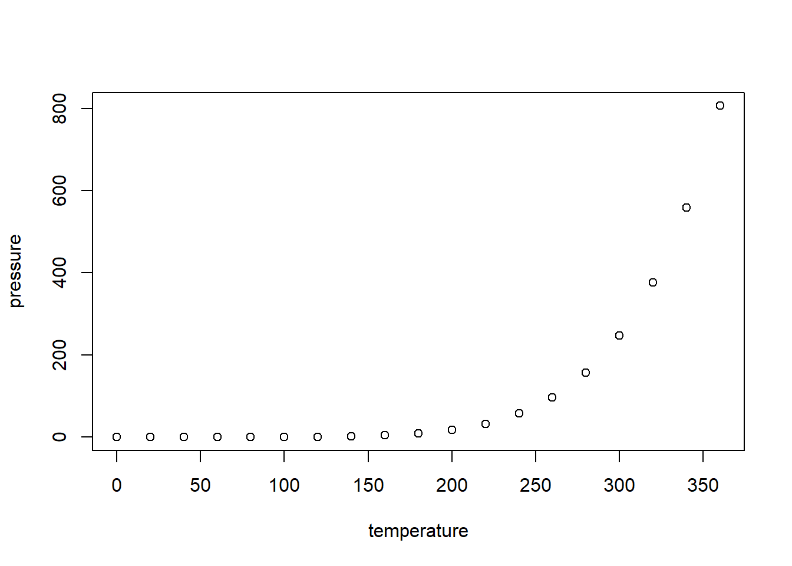

Code
summary(cars) speed dist
Min. : 4.0 Min. : 2.00
1st Qu.:12.0 1st Qu.: 26.00
Median :15.0 Median : 36.00
Mean :15.4 Mean : 42.98
3rd Qu.:19.0 3rd Qu.: 56.00
Max. :25.0 Max. :120.00 October 13, 2026
This is an R Markdown document. Markdown is a simple formatting syntax for authoring HTML, PDF, and MS Word documents. For more details on using R Markdown see http://rmarkdown.rstudio.com.
When you click the Knit button a document will be generated that includes both content as well as the output of any embedded R code chunks within the document. You can embed an R code chunk like this:
You can also embed plots, for example:

Note that the echo = FALSE parameter was added to the code chunk to prevent printing of the R code that generated the plot. # Introduction
── Attaching core tidyverse packages ──────────────────────── tidyverse 2.0.0 ──
✔ dplyr 1.2.1 ✔ readr 2.2.0
✔ forcats 1.0.1 ✔ stringr 1.6.0
✔ ggplot2 4.0.3 ✔ tibble 3.3.1
✔ lubridate 1.9.5 ✔ tidyr 1.3.2
✔ purrr 1.2.2
── Conflicts ────────────────────────────────────────── tidyverse_conflicts() ──
✖ dplyr::filter() masks stats::filter()
✖ dplyr::lag() masks stats::lag()
ℹ Use the conflicted package (<http://conflicted.r-lib.org/>) to force all conflicts to become errorsLoading required package: S4Vectors
Loading required package: stats4
Loading required package: BiocGenerics
Loading required package: generics
Attaching package: 'generics'
The following object is masked from 'package:lubridate':
as.difftime
The following object is masked from 'package:dplyr':
explain
The following objects are masked from 'package:base':
as.difftime, as.factor, as.ordered, intersect, is.element, setdiff,
setequal, union
Attaching package: 'BiocGenerics'
The following object is masked from 'package:dplyr':
combine
The following objects are masked from 'package:stats':
IQR, mad, sd, var, xtabs
The following objects are masked from 'package:base':
anyDuplicated, aperm, append, as.data.frame, basename, cbind,
colnames, dirname, do.call, duplicated, eval, evalq, Filter, Find,
get, grep, grepl, is.unsorted, lapply, Map, mapply, match, mget,
order, paste, pmax, pmax.int, pmin, pmin.int, Position, rank,
rbind, Reduce, rownames, sapply, saveRDS, table, tapply, unique,
unsplit, which.max, which.min
Attaching package: 'S4Vectors'
The following objects are masked from 'package:lubridate':
second, second<-
The following objects are masked from 'package:dplyr':
first, rename
The following object is masked from 'package:tidyr':
expand
The following object is masked from 'package:utils':
findMatches
The following objects are masked from 'package:base':
expand.grid, I, unname
Loading required package: IRanges
Attaching package: 'IRanges'
The following object is masked from 'package:lubridate':
%within%
The following objects are masked from 'package:dplyr':
collapse, desc, slice
The following object is masked from 'package:purrr':
reduce
The following object is masked from 'package:grDevices':
windows
Loading required package: GenomicRanges
Loading required package: Seqinfo
Loading required package: SummarizedExperiment
Loading required package: MatrixGenerics
Loading required package: matrixStats
Attaching package: 'matrixStats'
The following object is masked from 'package:dplyr':
count
Attaching package: 'MatrixGenerics'
The following objects are masked from 'package:matrixStats':
colAlls, colAnyNAs, colAnys, colAvgsPerRowSet, colCollapse,
colCounts, colCummaxs, colCummins, colCumprods, colCumsums,
colDiffs, colIQRDiffs, colIQRs, colLogSumExps, colMadDiffs,
colMads, colMaxs, colMeans2, colMedians, colMins, colOrderStats,
colProds, colQuantiles, colRanges, colRanks, colSdDiffs, colSds,
colSums2, colTabulates, colVarDiffs, colVars, colWeightedMads,
colWeightedMeans, colWeightedMedians, colWeightedSds,
colWeightedVars, rowAlls, rowAnyNAs, rowAnys, rowAvgsPerColSet,
rowCollapse, rowCounts, rowCummaxs, rowCummins, rowCumprods,
rowCumsums, rowDiffs, rowIQRDiffs, rowIQRs, rowLogSumExps,
rowMadDiffs, rowMads, rowMaxs, rowMeans2, rowMedians, rowMins,
rowOrderStats, rowProds, rowQuantiles, rowRanges, rowRanks,
rowSdDiffs, rowSds, rowSums2, rowTabulates, rowVarDiffs, rowVars,
rowWeightedMads, rowWeightedMeans, rowWeightedMedians,
rowWeightedSds, rowWeightedVars
Loading required package: Biobase
Welcome to Bioconductor
Vignettes contain introductory material; view with
'browseVignettes()'. To cite Bioconductor, see
'citation("Biobase")', and for packages 'citation("pkgname")'.
Attaching package: 'Biobase'
The following object is masked from 'package:MatrixGenerics':
rowMedians
The following objects are masked from 'package:matrixStats':
anyMissing, rowMediansLoading required package: ggrepel
Attaching package: 'PCAtools'
The following objects are masked from 'package:stats':
biplot, screeplot
clusterProfiler v4.20.2 Learn more at https://yulab-smu.top/contribution-knowledge-mining/
Please cite:
G Yu. Thirteen years of clusterProfiler. The Innovation. 2024,
5(6):100722
Attaching package: 'clusterProfiler'
The following object is masked from 'package:IRanges':
slice
The following object is masked from 'package:S4Vectors':
rename
The following object is masked from 'package:purrr':
simplify
The following object is masked from 'package:stats':
filterrow.names = 1 means that using the first column as row names.
SRR1039508 SRR1039509 SRR1039512 SRR1039513 SRR1039516
ENSG00000000003 679 448 873 408 1138
ENSG00000000005 0 0 0 0 0
ENSG00000000419 467 515 621 365 587
ENSG00000000457 260 211 263 164 245
ENSG00000000460 60 55 40 35 78
ENSG00000000938 0 0 2 0 1
SRR1039517 SRR1039520 SRR1039521
ENSG00000000003 1047 770 572
ENSG00000000005 0 0 0
ENSG00000000419 799 417 508
ENSG00000000457 331 233 229
ENSG00000000460 63 76 60
ENSG00000000938 0 0 0 SampleName cell dex albut Run avgLength Experiment
SRR1039508 GSM1275862 N61311 untrt untrt SRR1039508 126 SRX384345
SRR1039509 GSM1275863 N61311 trt untrt SRR1039509 126 SRX384346
SRR1039512 GSM1275866 N052611 untrt untrt SRR1039512 126 SRX384349
SRR1039513 GSM1275867 N052611 trt untrt SRR1039513 87 SRX384350
SRR1039516 GSM1275870 N080611 untrt untrt SRR1039516 120 SRX384353
SRR1039517 GSM1275871 N080611 trt untrt SRR1039517 126 SRX384354
Sample BioSample
SRR1039508 SRS508568 SAMN02422669
SRR1039509 SRS508567 SAMN02422675
SRR1039512 SRS508571 SAMN02422678
SRR1039513 SRS508572 SAMN02422670
SRR1039516 SRS508575 SAMN02422682
SRR1039517 SRS508576 SAMN02422673---
title: "DESeq2_analysis"
output: html_document
date: "2026-10-13"
---
```{r setup, include=FALSE}
knitr::opts_chunk$set(echo = TRUE)
```
## R Markdown
This is an R Markdown document. Markdown is a simple formatting syntax for authoring HTML, PDF, and MS Word documents. For more details on using R Markdown see <http://rmarkdown.rstudio.com>.
When you click the **Knit** button a document will be generated that includes both content as well as the output of any embedded R code chunks within the document. You can embed an R code chunk like this:
```{r cars}
summary(cars)
```
## Including Plots
You can also embed plots, for example:
```{r pressure, echo=FALSE}
plot(pressure)
```
Note that the `echo = FALSE` parameter was added to the code chunk to prevent printing of the R code that generated the plot. \# Introduction
```{r}
# library(airway)
# vignette("airway")
```
```{r}
library(tidyverse)
library(DESeq2)
library(annotables)
library(PCAtools)
library(EnhancedVolcano)
library(clusterProfiler)
```
# Data Import
```{r}
raw_counts <- read.csv("airway_raw_counts.csv", row.names = 1)
mtd <- read.csv("airway_metadata.csv", row.names = 1)
```
row.names = 1 means that using the first column as row names.
```{r}
head(raw_counts)
```
```{r}
head(mtd)
```
```{r}
all(rownames(mtd) == colnames(raw_counts))
```
# Pre-filtering
# Summary
```{r}
```